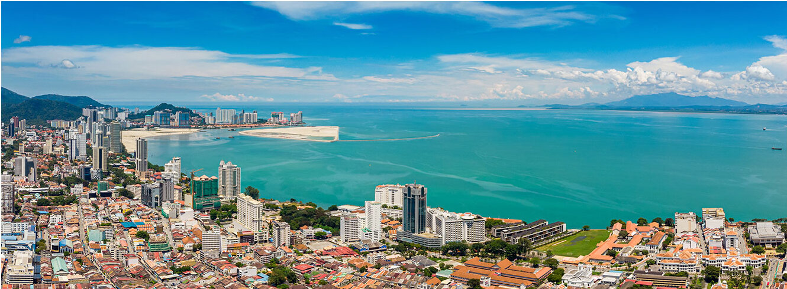
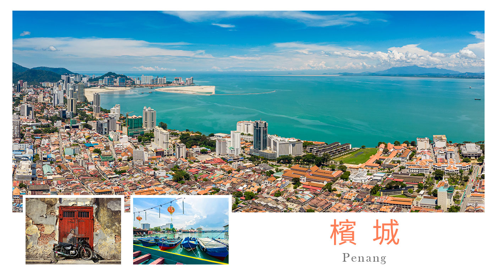
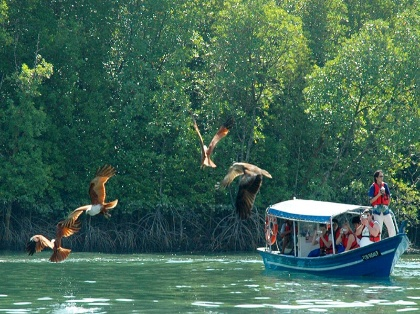
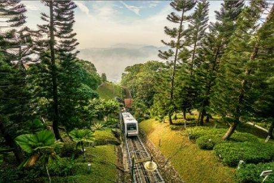
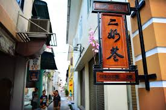
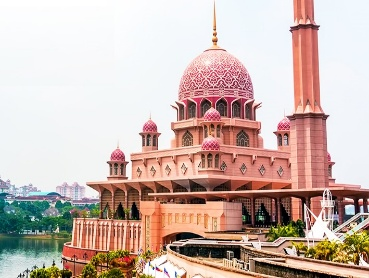

世界文化遺產喬治市、百年東方大酒店、紅樹林老鷹餵食秀——把南洋最醇的五天，一次收進行囊。
這趟旅程從檳城出發：喬治市的老街上，觀音亭、興都廟、清真寺與教堂同在一條和諧街；雨城太平的湖畔百年雨樹垂向水面；紅樹林裡老鷹俯衝掠食。第三晚入住 1885 年開業的 Eastern & Oriental 東方大酒店海景套房，毛姆住過的傳奇門面，今晚是你的。最後兩天南下怡保與吉隆坡，從二奶巷的故事走到雙子星塔的燈火，再以布城粉紅清真寺收尾。

星宇午前班機出發，經吉隆坡轉機，傍晚抵達素有「亞洲熱帶花園」美稱的檳城，夜宿喬治市。首府喬治市是一座 19 世紀中古城市——古老廟宇、會館、老商店錯落街頭，濃厚的南洋風情，從晚餐的第一口開始。

從太平湖的百年雨樹，到紅樹林上空俯衝的老鷹，再走進一條街四種信仰的和諧街——這是行程裡最豐盛的一天。乘船深入全馬最大的紅樹林生態保護區，老鷹倏地俯衝、利爪掠食再直上青天，宛如親臨 Discovery 現場；魚排養殖場還能體驗餵食石斑、看手臂長的彈塗魚。途中造訪十八丁紅木黑金炭窯、全馬第一條鐵路遺跡與十八丁漁村，傍晚走進和諧街・小印度區，甲必丹吉寧回教堂與觀音廟相映成趣。

上午纜車直上檳城之巔，下午出席國際獅子會開幕式，晚上入住 1885 年的東方大酒店海景套房——一天裡三個高點。海拔 830 公尺的檳城最高峰，1922 年啟用的纜車載您直上山頂，晴日可遠眺檳威海峽與跨海大橋；接著於 Setia SPICE Convention Centre 出席獅子會開幕式；夜晚入住 Eastern & Oriental Hotel——毛姆、赫曼赫塞都曾是座上賓的殖民傳奇，今晚是你的 Victory Annexe 海景套房。

南下《Lonely Planet》亞洲十大美食之都怡保，走過 19 世紀富商為二房興建宅邸的二奶巷，正經歷一場文藝復興；傍晚抵達吉隆坡——1957 年國旗首次升起的獨立廣場、88 層晶瑩剔透的雙子星塔花園廣場、頂樓十英畝空中花園的 The Exchange TRX，一路走到南洋土特產店，伴手禮一次備齊。

最後半天留給行政首都布城：四分之三建於湖面上、可容納一萬兩千人的粉紅色普特拉清真寺，是大馬最上相的打卡地標；接著是 650 公頃的布城湖與綠穹頂的首相署 Perdana Putra，然後星宇直飛，晚間回到桃園，結束五日典藏之旅。
＊報名訂金 NT$ 20,000／人，收取訂金後依國外旅遊定型化契約辦理。刷卡與單人房差請洽角落旅行社服務人員，實際以訂到機位為準。全程購物 2 站（土產店、巧克力專賣店），絕不強迫。費用包含來回機票與燃料稅、行程內餐食景點住宿、500 萬責任險＋20 萬意外醫療險、領隊導遊小費；不含台灣境內機場往返接送、新辦護照／台胞證或簽證費用、個人消費衍生之費用。